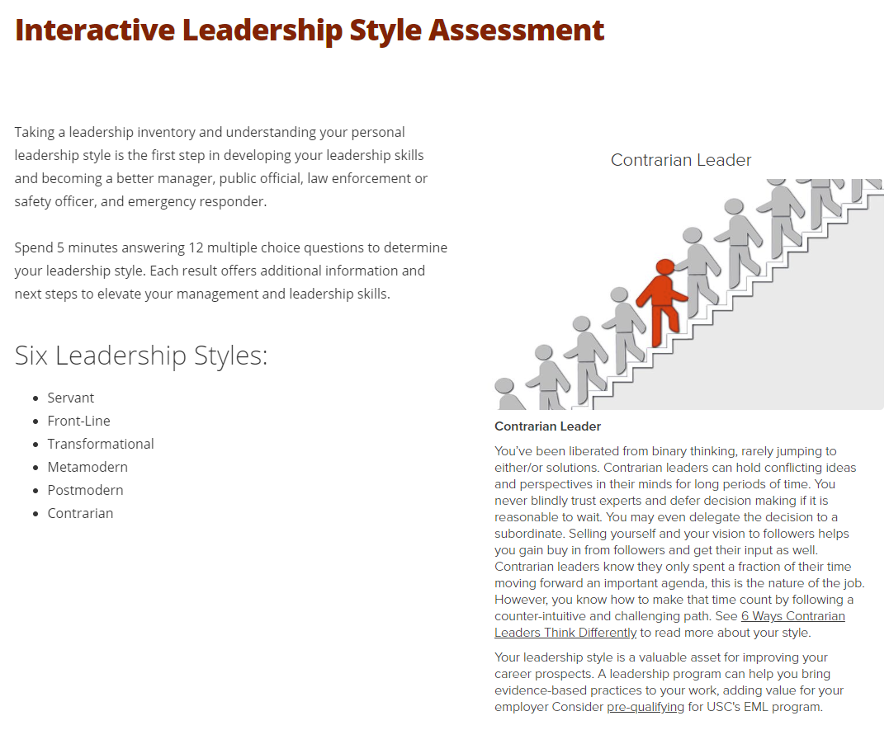

My Personality - Michelle May
Personality Tests
Myer Briggs Style ENFP-A - Assertive Campaigner
Learning Styles Test

pic is in folder
Interactive Leadership Style Assessment
pic is in folder
Analysis and insights
What do these tests mean?
These tests confirm that I am good at creating and championing ideas and innovation and leading people on the journey. I am an excellent networker and I am able to make people feel heard and appreciated. It is true that I am less patient and adept at day to day administration. I am frustrated by micromanagement and administration which detracts from the bigger picture of what we are trying to achieve. I prefer to be explaining, facilitating and inspiring everyone along the path to success. I do however hold great respect for those who deal in these areas and am willing to champion their cause and importance as well.
How do they influence my behaviour in a team?
I always ally myself with a practical administrative type to back me up on the necessities. Luckily I tend to be very popular with administrators as I make them feel essential and part of the adventure. I am prone to stress and lose sleep if people are not on the journey and after a certain amount of true effort have a tendency to abandon projects that are too humdrum and show no signs of progress on the grounds that they are ‘not ready’ or ‘do not need me’. Techies tend to be a little suspect as they would like more time to be convinced they can create the dream before I start selling it. On the other hand I do listen to and respond to them so can be their greatest advocates. My extreme independence and tendency to be demonstrably passionate and emotional at times about the work can be offputting to executives and I need to be mindful to dial my enthusiasm back in such meetings. As I thrive on questioning the status quo and exploring alternatives, I need to take time to listen to the concerns of more cautious team members and treat them with respect.
How should I take account of this when forming a team
The team needs to include detail people and someone who will closely monitor the schedule, budget and Jira backlog, so a strong project coordinator if I am the PM. I need to spend time with this person and the technical people to gain trust and ensure I am inspiring and not making them anxious. Luckily I am aware of this and have good people and communication skills so these people usually love working with me as I take care of customer and management concerns and clear the way for them to do their work.